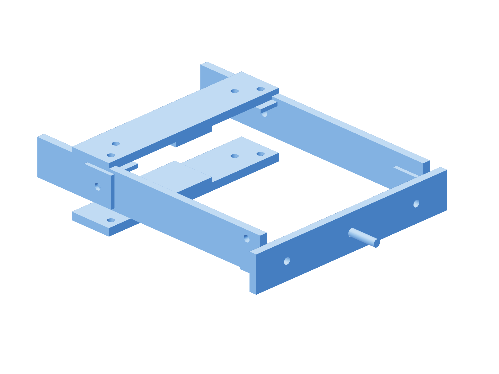

Payload / release-force fixture102 / 179
Build the temporary nozzle loading fork
A separate padded body clamp carries a metal fork around the gun. Its cord stud applies load at the observed nozzle datum without touching the nozzle.
Add2 spare jaw bars / TPU pads · 2 nozzle-test-fork-arm · nozzle-test-bridge · 4 metal angles · M6 × 40 cord stud / 2 jam nuts · 2 M5 × 80 temporary clamp bolts / two nuts each / two washers
Tools / setupLaser key off · wire retracted · tube removed · independent tether / catch · accepted redirect

- Clamp the two spare padded jaw bars on a safe gun-body surface. Join the two 210 mm metal fork arms outside the gun at Y = ±80 mm with the rear angle joints.
- Join the 180 mm front bridge using both front angles. Cross-drill the grade-8.8 M6 × 40 stud Ø3.5 mm, 5 mm from under its head; lock it against both bridge faces.
- Align and observe the cord-hole centroid at the actual nozzle datum; its illustrative model projects 5 mm behind the bridge. Keep it clear of every gun opening.
Ready when
The fork is rigid at its padded body contacts, and its measured cord-hole position reaches the actual nozzle datum without loading an optic/control. A moving clamp, wrong load point or obscured opening fails the loading fork. Correct its metal/pad geometry before applying a test force.